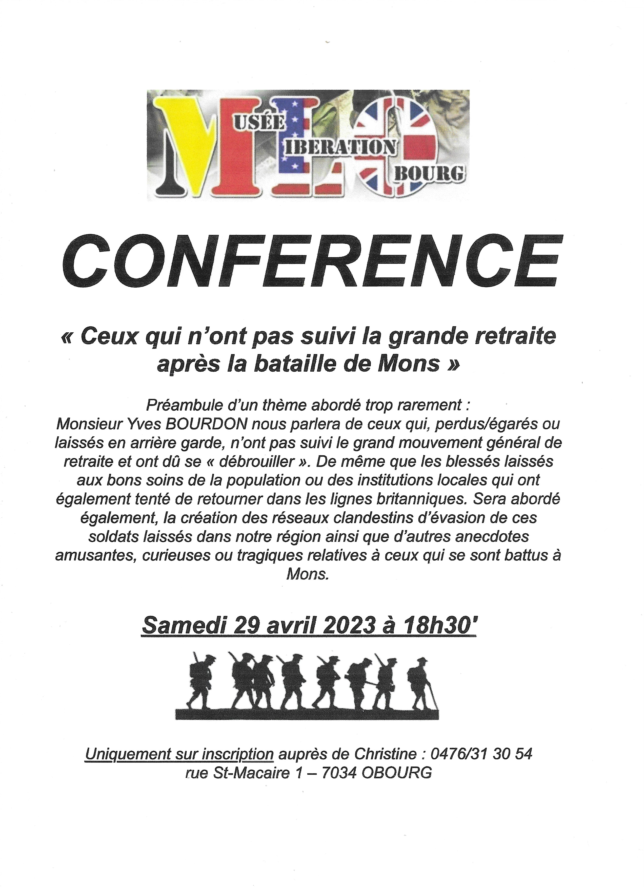
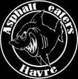

Evènements à venir
Le 29 avril
Le 21 juillet
Comme chaque année, le Musée fête le 21 juillet en association avec le groupe des Asphalts Eaters.
Prochainement vous trouverez ici plus d'informations concernant le 21 juillet 2023.
La presse parle de nous!
- Voir l'article de Télé MB
- Voir l'article de Sudinfo
- Voir l'article de Orange
- voir l'article de RTL Info
Soutenez le musée
Vous pouvez nous soutenir simplement en vous faisant membre de l'association de fait "Les amis du Musée de la Libération".
carte membre : 10 Є
(Numéro d'entreprise : 0788.280.002)
Cette carte vous donnera le droit d'assister entre-autre à:
- Des exposés sur le matériel
- Des organisations de voyage
- Des projections documentaires
- Des conférences
- Des buffets traiteur
- ... Et encore bien d'autres choses...